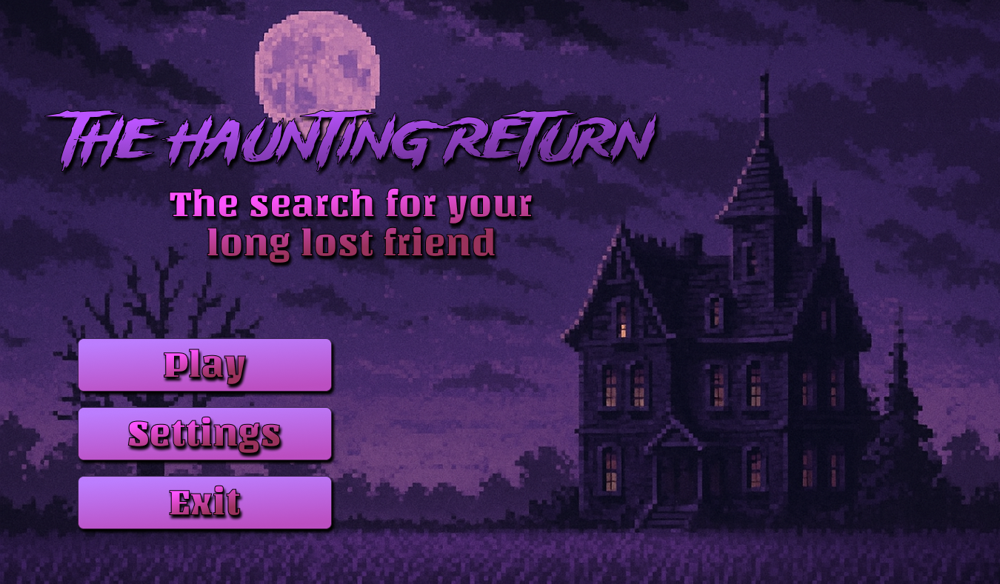
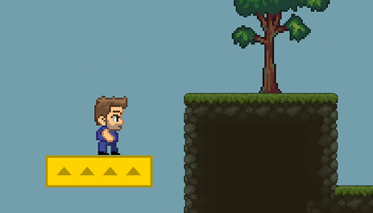
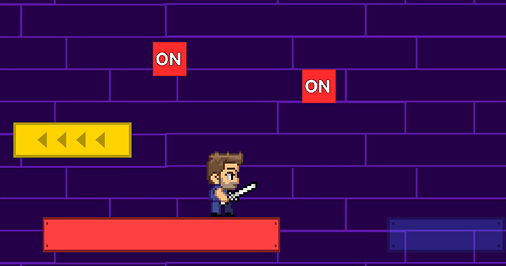
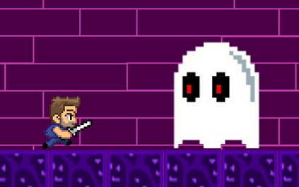

Dit project was de 'bootcamp' voor de minor Applied Game Design voor CMD. De opdracht was om een 2D platformer te bouwen in Unity met C# code. De bedoeling was om minimaal 3 levels te bouwen met duidelijke spelregels, een interresant thema/verhaal en fijne gameplay.
Ik heb ervoor gekozen om een metroidvania-achtig spel te maken, waarbij je de focus zit op zoeken waar je heen moet. In het spel speel je als een man, waarvan zijn beste vriend jaren geleden spoorloos is verdwenen is een mysterieus landhuis. Je gaat het landhuis zien met het doel om hem terug te vinden. Het spel is verdeeld over 4 levels, waarvan 3 gebaseerd zijn op platforming en onderzoeken en de laatste een
Dit project was volledig individueel wat inhield dat ik alles van het spel zelf had gedaan. Ik heb het spel zelf ontworpen en geprogrammeerd, assets gemaakt in Figma en het verhaal in het spel verwerkt door middel van logboeken die je kunt vinden.

Omgeving Onderzoeken

Platform Puzzels

Boss Fight
Eigen reflectie: Dit was voor mij het leukste project van de minor aangezien we volledige vrijheid hadden voor wat we wilden maken en ik volledige controle had over wat ik wilde doen. Tegelijkertijd was dit voor mij ook heel uitdagend, aangezien je alles zelf moest maken, waaronder mechanics, levels, assets, verhaal etc. In een team zou je de rollen hiervoor verdelen waardoor andere projecten makkelijker afgingen. Deze staat me daardoor het meeste bij aangezien ik voor dit project al mijn skills moest testen, zowel als developer als ontwerper.